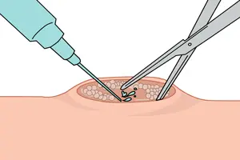
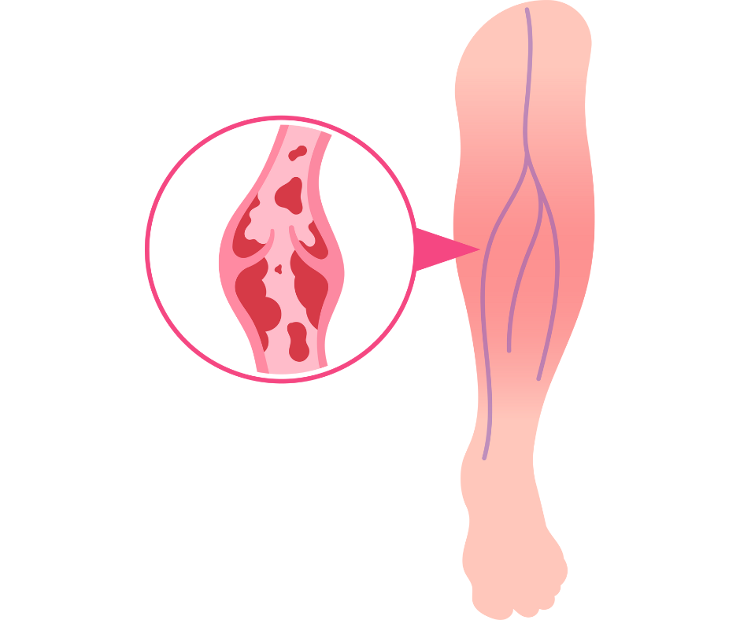
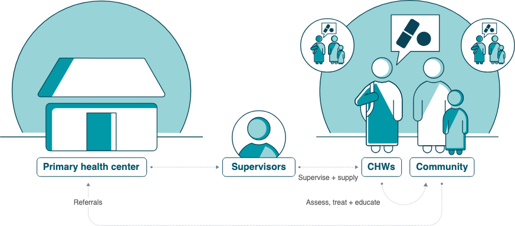
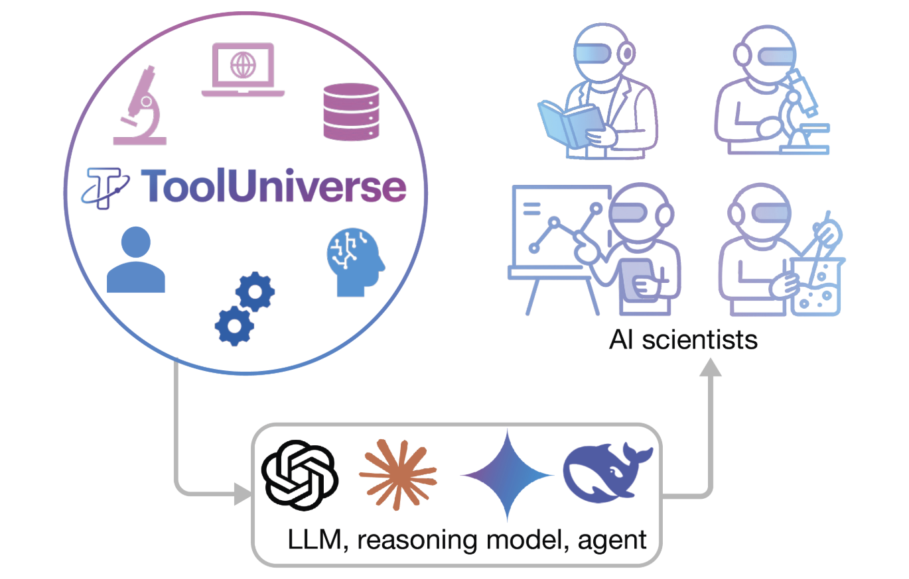

Abscess Drain Tracking Database
LLMClinical Data
Built a structured clinical database and analysis pipeline for abscess drain placements, complications, and outcomes in interventional radiology.
Portfolio Deep Dive
A broader view of technical work across clinical AI, data infrastructure, global health tooling, and interactive data visualization.

LLMClinical Data
Built a structured clinical database and analysis pipeline for abscess drain placements, complications, and outcomes in interventional radiology.

HealthcareOutcomes
Organized DVT treatment and outcomes data to support evidence-informed decision making and translational clinical research.

NLPGlobal Health
Designed an LLM assistant concept for community health workers to improve case documentation and frontline decision support in low-resource settings.

Data VizMobility
Built an interactive map and analysis workflow to explore Bluebikes traffic patterns, bike infrastructure, and urban cycling accessibility.
BioengineeringGI Devices
Prototyped and tested a pH-responsive star-shaped GI delivery platform for enzyme-based treatment of hyperoxaluria.

Product DesignDeveloper Tools
Designed a discovery interface for specialized tools and resources to make technical ecosystems easier to navigate.